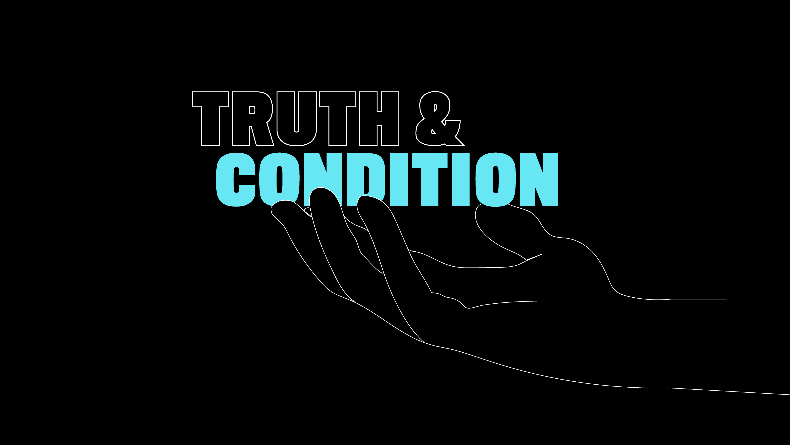
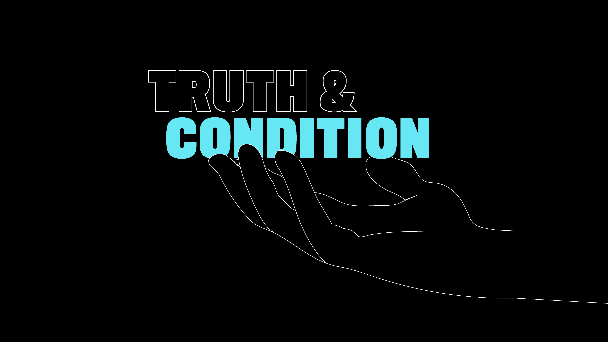

The concept of Truth & Condition came from research around cognitive behavior; how we begin life with a certain set of traits and characteristics and through the events we encounter in life these traits and characteristics are filtered through “conditioning”, which are lessons learned from the observation and experience of life events.
Shifts in perspective often reveal the difference between truth and conditioning, and the movement type of interaction that AR affords its users lent itself perfectly to the concept. As AR allows its users to move around a physical space, while also observing a digital layer put over it, we could create an experience that meshes both the physical world and the digital world to communicate the concept and themes. We wanted simple but effective interaction through the form of movement. Initially, we were to expand the scope and allow for direct interaction with the digital objects by tapping areas of the object on screen. However, this broke the balance between physical and digital that we wanted to maintain.
It was important to utilize movement, the interaction method we chose primarily, first and foremost as a way of revealing the hidden messages and areas on the object. As such, the user depends on the digital object to be able to see what they’re looking for, but must also rely on their movement within the physical space to reveal what they’re looking for. It creates a harmonious balance between physical and digital that allows users to reveal hidden truths by expanding the lens through which they normally consume technology.
Shifts in perspective often reveal the difference between truth and conditioning, and the movement type of interaction that AR affords its users lent itself perfectly to the concept. As AR allows its users to move around a physical space, while also observing a digital layer put over it, we could create an experience that meshes both the physical world and the digital world to communicate the concept and themes. We wanted simple but effective interaction through the form of movement. Initially, we were to expand the scope and allow for direct interaction with the digital objects by tapping areas of the object on screen. However, this broke the balance between physical and digital that we wanted to maintain.
It was important to utilize movement, the interaction method we chose primarily, first and foremost as a way of revealing the hidden messages and areas on the object. As such, the user depends on the digital object to be able to see what they’re looking for, but must also rely on their movement within the physical space to reveal what they’re looking for. It creates a harmonious balance between physical and digital that allows users to reveal hidden truths by expanding the lens through which they normally consume technology.